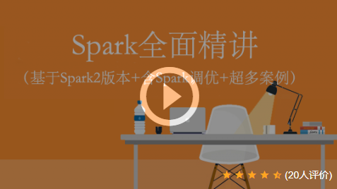

是一套系统且具有很强实战性的Spark课程，通俗易懂，由浅入深，基于企业项目环境，深度剖析和讲解Spark。本课程涵盖了Spark Core、Spark SQL、Spark Streaming、Spark Mllib以及Spark运维与监控、Spark相关项目等所有Spark核心内容，最后以企业级项目案例来详细讲解Spark并带领大家完成从理论到实战的进阶！

链接详情：http://www.xuetuwuyou.com/course/149
1. 课程介绍
本课程学完以后，相当于有1-2年spark开发经验。可以熟练掌握scala开发，spark core开发，spark streaming开发，sparkSQL开发。能独立完成spark大数据的项目，并对项目进行调优。
本套课程里涉及了spark与MySQL，Hive，Tachyon ,Kafka, hbase,flume，hadoop等大数据热门技术的交互。且每个技术都有案例演示，属于真正意义上的大数据的开发。
2. 课程视频及源码获取联系方式
收集整理了人工智能和大数据方面的项目实战类的视频教程，需要视频请加微信（BigDataAI007） 如本站没有您想要的视频，请微信联系，可以帮您拿到课程。

2.1 项目总体介绍和背景
项目总体介绍和背景
第一阶段：附赠Scala语言培训课程，加量不加价（2017.7.31新增）
1-01、scala与Java做对比
1-02、多门语言对比和编译器安装
1-03、开发第一个scala的程序
1-04、idea工具安装
1-05、使用IDEA创建项目和项目打包
1-06、变量的申明
1-07、条件表达式和块表达式
1-08、循环-while和for
1-09、调用方法和函数
1-10、scala方法的声明
1-11、函数和方法的区别
1-12、体会函数式编程
1-13、用Java去解释函数式编程
2-14、前面知识回顾
2-15、创建定长数组
2-16、创建边长数组
2-17、数组的遍历
2-18、数组常见的算法
2-19、Map集合操作
2-20、元组操作
2-21、list和Array数组
2-22、List集合的补充
2-23、综合练习
2-24、Set集合
2-25、lazy特性
2-26、类的定义
2-27、主构造器
2-28、辅助构造器
2-29、对象，伴生对象
2-30、apply方法
2-31、应用程序对象
2-32、抽象和继承
2-33、Trait
2-34、模式匹配
2-35、关于字符串的使用
2-36、样例类
2-37、Option类的使用
2-38、偏函数
3-39、curring
3-40、隐式参数
3-41、隐式转换发生的时机1
3-42、隐式转换案例演示（1）
3-43、隐式转换案例演示（2）
3-44、隐式转换发生时机2
3-45、上界
3-46、下界
3-47、视图边界
3-48、协变
3-49、逆变
3-50、知识归纳
3-51、案例需求
3-52、案例代码演示
4-53、Akka基本概念
4-54、Akka的简单案例演示
4-55、综合案例需求分析
4-56、综合案例代码演示
第二阶段、Spark core深度剖析
第00课、课程特色和学习方式
第1课、Spark概述（四大特性）
第2课、Spark快速使用
第3课、什么是RDD？
第4课、Spark架构
第5课、linux环境准备（虚拟机，linux）
第6课、hadoop环境准备
第7课、Spark环境准备
第8课、Spark开发环境搭建（java，scala）
第8课、Spark开发环境搭建-maven打包（第8节补充）
第9课、Spark任务提交
第10课、Historyserver服务配置
第11课、RDD的创建方式
第12课、Transformation和action原理剖析
第13课、map，filter，flatMap算子演示（java版）
第14课、groupbykey,reduceByKey,sortByKey算子演示（java版）
第15课、join,cogroup,union算子演示（java版本）
第16课、Intersection，Distinct，Cartesian算子演示（java版本）
第17课、mapPartitions，reparation，coalesce算子演示（java版）
第18课、sample,aggregateBykey算子演示（java版本）
第19课、mapPartitionsWithIndex,repartitionAndSortWithinPartitions算子演示（java版）
第20课、action算子演示（java版）
第21课、map,filter,flatMap,groupByKey,reduceByKey,groupByKey,sortByKey算子演示(scala版)
第22课、join,cogroup,union,intersection,distinct,cartesian算子演示(scan版)
第23课、mapPartitions,reparition,coalesce,sample,aggregateByKey算子演示（scala版
第24课、mapPartitionsWithIndex,repartitionAndSortWithinPartitions算子演示（scala版）
第25课、RDD持久化(Tachyon)
第26课、共享变量(广播变量,累加变量)
第27课、Spark on YARN模式(cluster,client)
第28课、窄依赖和宽依赖
第29课、Shuffle原理剖析
第30课、stage划分原理剖析
第31课、Spark任务调度
第32课、综合案例一TopN（scala)
第33课、综合案例二日志分析上(scala)
第33课、综合案例二日志分析下(scala)
第34课、Spark2内核新特性
第三阶段、Spark调优
第35课、Spark调优概述
第36课、开发调优(1)
第37课、开发调优(2)
第38课、开发调优(3)
第39课、开发调优(4)
第40课、开发调优(5)
第41课、开发调优(6)
第42课、开发调优(7)
第43课、开发调优(8)
第44课、开发调优(9)
第45课、数据本地化
第46课、数据倾斜的原理
第47课、数据倾斜解决方案一
第48课、数据倾斜解决方案二
第49课、数据倾斜解决方案三
第50课、数据倾斜解决方案四
第51课、数据倾斜解决方案五
第52课、数据倾斜解决方案六
第53课、数据倾斜解决方案七
第54课、shuffle调优
第55课、Spark资源模型（内存管理）
第56课、资源调优
第57课、Spark JVM调优(1)
第58课、Spark JVM调优(2)
第59课、Spark JVM调优(3)
第60讲、Spark JVM调优(4)
第61课、Spark JVM调优(5)
第62课、Spark调优总结
第四阶段、Spark SQL精讲
第63课、SparkSQL前世今生
第64课、DataFrame使用
第65课、reflection方式将RDD转换成DataFrame
第66课、Programmatically方式将RDD转换成DataFrame
第67课、DataFreme VS RDD
第68课、数据源之数据load和save
第69课、parquet文件操作
第70课、数据源之json
第71课、数据源之JDBC
第72课、数据源之Hive table-hive环境搭建
第73课、数据源之Hive table-spark环境集成
第74课、数据源之Hive table-使用
第75课、数据源之HBase环境准备
第76课、数据源之HBase
第77课、Thriftserver使用
第78课、UDF开发
第79课、UADF开发
第80课、开窗函数
第81课、groupBy和agg函数使用
第82课、综合案例一（日志分析）
第83课、综合案例二(用户行为分析)-1
第84课、综合案例二(用户行为分析)-2
第85课、综合案例二(用户行为分析)-3
第86课、综合案例二(用户行为分析)-4
第87课、综合案例二(用户行为分析)-5
第五阶段 SparkStreaming精讲
第88课、SparkStreaming的应用
第89课、Spark Streaming工作原理
第90课、Spark Streaming入门案例
第91课、Streaming VS Mapreduce VS Storm
第92课、Spark Streaming HDFS WordCount例子演示
第93课、Spark Streaming之updateStateByKey
第94课、Spark Streaming之mapWithState
第95课、Spark Streaming之transform
第96课、Spark Streaming之window操作
第97课、Spark Streaming之foreachRDD
第98课、Spark Streaming之与kafka和flume集成的两种方式
第99课、Spark Streaming之kafka原理介绍
第100课、Spark Streaming之kafka集群部署
第101课、Spark Streaming之kafka集成
第102课、Spark Streaming之flume原理介绍
第103课、Spark Streaming之flume搭建
第104课、Spark Streaming之flume集成
第105课、Spark Streaming之综合案例演示-TopN计算
第105课、Spark Streaming之综合案例演示-TopN计算 -补充
第106课、Spark Streaming之Driver HA配置
第六阶段 Spark2新特性
第107课、Spark2新特性之 Spark2设计目标-更容易、更快速、更智能
第108课、Spark2新特性之whole-stage code generation和vectorization技术剖析
第109课、Spark2 新特性之SparkSession
第110课、Spark2新特性之RDD,DataFrema和DataSet关系
第111课 、Spark2新特性之DataSet[Untyped] transformations演示(1)
第112课、Spark2 新特性之DataSet Actions（2）
第113课 、Spark2 新特性之Basic Dataset functions操作（3）
第114课、Spark2 新特性之DataSet[Typed] transformations（4）
第115课、Spark2新特性之再探RDD,DataFrame 和DataSet关系
第116课、Spark2 新特性之 Structured Streaming设计目标
第117课、spark2新特性之 Structured Streaming 案例演示
第118课、Spark2 新特性之 Structured Streaming原理剖析
第七阶段、Spark源码导读（2017.8.17新增，加量不加价）
1.如何获取Spark源码
2.Spark服务的启动流程
3.源码执行wordcount的程序
4.SparkContext初始化(1)
5.SparkContext初始化(2)
6.Master的资源分配算法
7.Executor向Driver注册
8.ExcutorUML图
9.知识回顾
10.大体过一下任务提交流程
11.Stage的划分
12.Spark任务调度流程
第八阶段、实战项目：用户行为分析（2017.8.17新增，加量不加价）
1.项目流程介绍
2.项目整体概况
3.大数据项目的数据来源
4.项目背景
5.常见概念
6.项目需求
7.项目整理流程
8.从表的设计引发的思考
9.获取任务参数
10.需求一数据信息
11.需求一根据条件筛选会话
12.需求一举例说明
13.需求一点击下单支付品类TopN(上)
14.需求一点击下单支付品类TopN(下)
15.需求二需求分析
16.需求二数据信息
17.需求二获取用户行为数据
18.需求二用户表和信息表join
19.需求二再次需求分析
20.需求二自定义UDF函数
21.需求二自定义UDAF函数
22.需求二各区域商品点击次数统计
23.需求二城市信息表和商品信息表join
24.需求二各区域热门商品统计
25.需求二把结果持久化导数据库
26.需求二总结
27.需求三需求分析
28.需求三数据信息
29.需求三思路梳理
30.需求三从kafka获取数据
31.需求三对数据进行黑名单过滤
32.需求三动态生成黑名单（上）
33.需求三动态生成黑名单(下)
34.需求三实时统计每天各省份各城市广告点击
35.需求三实时统计各省份流量点击
36.需求三实时统计广告点击趋势
37.需求三总结